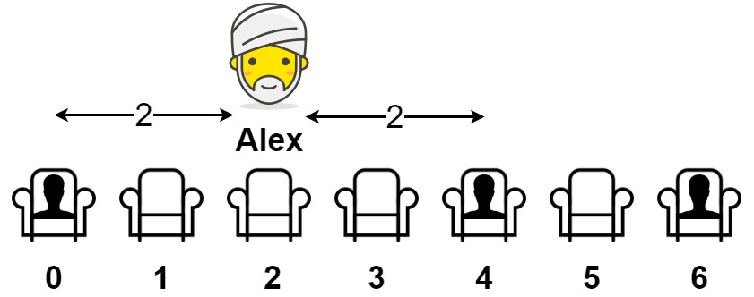

849. 到最近的人的最大距离
空段分三类各算最好坐距：开头段=第一个人的下标、中间段=间距/2、结尾段=n−1−最后一人，取最大。
思路
- 记
prev为上一个人的下标；只有空段的两端决定最优座位，段内别的位置不会更好。 - 开头空段坐 0 号位、结尾空段坐
n−1，都能独享整段；中间段坐正中间，距离 =(i − prev) / 2。 prev < 0和prev < n − 1分别表达「开头/结尾是空段」，别把中间段误算成整段。
图解
最优解
1class Solution {2 public int maxDistToClosest(int[] seats) {3 int n = seats.length, ans = 0, prev = -1; // prev：上一个坐着的人的下标4 for (int i = 0; i < n; i++) {5 if (seats[i] == 1) {6 if (prev < 0) {7 // 开头空段：坐 0 号位，距离就是第一个人的下标8 ans = Math.max(ans, i);9 } else {10 // 两头有人：坐空段正中间，距离是间距的一半11 ans = Math.max(ans, (i - prev) / 2);12 }13 prev = i;14 }15 }16 // 结尾空段：坐到最右边 n−117 if (prev < n - 1) ans = Math.max(ans, n - 1 - prev);18 return ans;19 }20}题目
给你一个数组 seats 表示一排座位，其中 seats[i] = 1 代表有人坐在第 i 个座位上，seats[i] = 0 代表座位 i 上是空的（下标从 0 开始）。
至少有一个空座位，且至少有一人已经坐在座位上。
亚历克斯希望坐在一个能够使他与离他最近的人之间的距离达到最大化的座位上。
返回他到离他最近的人的最大距离。
示例 1：

输入：seats = [1,0,0,0,1,0,1] 输出：2 解释： 如果亚历克斯坐在第二个空位（seats[2]）上，他到离他最近的人的距离为 2 。 如果亚历克斯坐在其它任何一个空位上，他到离他最近的人的距离为 1 。 因此，他到离他最近的人的最大距离是 2 。
示例 2：
输入：seats = [1,0,0,0] 输出：3 解释： 如果亚历克斯坐在最后一个座位上，他离最近的人有 3 个座位远。 这是可能的最大距离，所以答案是 3 。
示例 3：
输入：seats = [0,1] 输出：1
提示：
2 <= seats.length <= 2 * 104seats[i]为0或1- 至少有一个 空座位
- 至少有一个 座位上有人
题面取自力扣当前版本。
数据快照 2026-11-04。题面版权归力扣所有，本站点仅供本人学习使用，请勿对外发布。